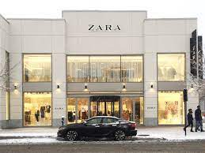
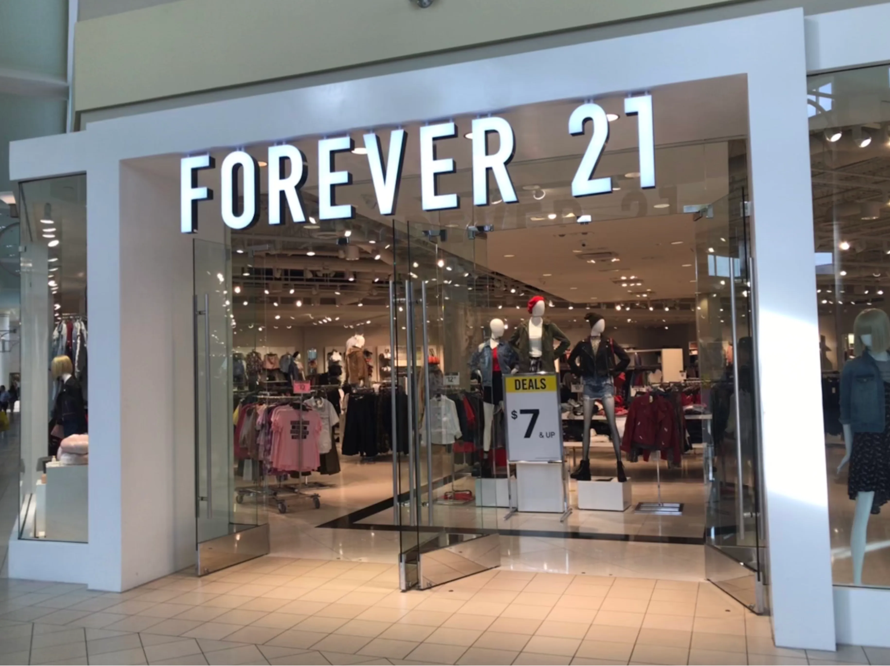

Top 5 clothing stores in California
By Tanatswa Makayi and Amaya Terrazas

Many people tend to make assumptions or form a basis of others due to the way they dress, but finding out what you look best in is hard when everything good is so expensive. We will be making a ranking list about the Top 5 best clothing stores in California.
The way the ranking system works is by popular vote, if 3 students vote Macy’s and 2 vote for Hot Topic, Macy’s would get a higher placement on the list. Secondly we will also be including the ratings of said shops on websites (their star rating ex: ⅘ stars ⅖ etc.)
Number 5: Shein

Shein is a really popular online clothing store with a 4.5 star rating. Shein has a variety of options to choose from, there are many different types of clothing and so many different styles. Some of the clothing options to choose from are jeans, sweatpants, t-shirts, crop tops, shorts, pajamas, tank tops, leggings, dresses, bathing suits, and way more. Shein also has the option to choose plus sized clothing, kids clothing, womens clothing and mens clothing and it's a pretty equal variety. Some of the clothing doesn't have the best quality but most items are decent. Shein also sells other items such as shoes, accessories, bags, jewelry and more. The prices range between $5-$45 and you earn coupons and discounts the more you purchase an order. The average wait time for your shein package to arrive is between 1-2 weeks, every clothing item is individually wrapped and is packaged nicely. Overall shein is recommended and is a great online fashion store to shop at, 6/10 .
Number 4:H&M
H&M is a more Low-end/cheaper store than some on this list and generally has okay quality (more on the cheaper end of production), and most people tend to find pleasing items inside the store. Some of the fabrics they use include cotton and Lyocell and leather, and cotton tends to be pretty durable and good in texture. The price of the items generally range between $20-$40 and they have a nice selection of clothing options in the store, ranging from mens, womens, kids - boys and girls, and toddlers. One of the downsides to H&M though is the fact they don’t produce their own clothes and ship it out from suppliers in Asia and Netherlands and other parts of Europe so it takes them longer to restock on their items. H&M gets a solid 7/10.
Number 3: Zara

Zara is a popular clothing store with a big array of clothes. Their prices are pretty average and range between $20-$60. Their clothing options include jeans, jackets, dresses, crop tops, shoes, jewelry and other accessories. The clothing is pretty comfortable and for certain items there are many different colors to choose from and there is a pretty good variety to choose from. Zara has a lot of payment methods such as paypal, apple pay, visa, debit and as well credit and cash.This shop overall gets an 8/10
Number 2: Forever 21

Forever 21 is a very popular clothing and is known by lots of people. Students Kylee Kelley and a student who has asked to remain anonymous say “Forever 21 is also a great place to go to when you need an outfit fast and on a budget.” The prices range from $5-$60, there is also a decent size clearance option to choose from when you're on a budget. Some of the types of clothing they sell are jeans, crop tops, t-shirts, hoodies, sweatpants, leggings, shorts, dresses, bathing suits, and more. Forever 21 also has shoes, jewelry, purses, bags and other cool items. The clothing here is pretty good quality and is really comfortable. Forever 21 is highly recommended by Centerville students so it gets a 8.5/10
Number 1: Hollister
Out of the many students we asked most said Hollister was a good shop for looking for items that they wanted specifically jeans as Hollister tends to have a wide variety of pants like sweatpants, cargo pants, jeans (mostly denim) and a few corduroy pants. The shop tends to have an average price of around 40-50$ but the clearance section has an average of around 20-30 dollars. The shop itself has an equal variety of things for men and women so there is rarely any shortage in items for a specific gender and bigger variety for the other. If you don’t prefer to use digital currency like a credit/debit card or just don’t have one and have a lot of money in dollar bills or $20 bills Hollister takes debit as well as cash and credit so there’s always more than 1 payment option available. Student Kylee Kelley says, “I really like Hollister and the many options it has as well as the really good clearance section.” Most students think it deserves a 9/10
Conclusion
After talking to Centerville students and asking them about their favorite clothing stores, we were able to rank them. Number 5 being Shein, Shein has a huge variety to choose from with great prices, it gets a 6/10. Number 4 being H&M, H&M is always a safe option to choose from with good clothes so it's a 7/10. Number 3 was Zara, Zara has really good quality in clothing so it gets an 8/10. Number 2 is Forever 21, Forever 21 is well liked and is always a good option to go so it's a solid 8.5/10. Finally number 1 being Holister, Holister has a good variety of clothing, reasonable prices, good quality, and is most liked by Centerville students we talked to, so overall it gets a 9/10.